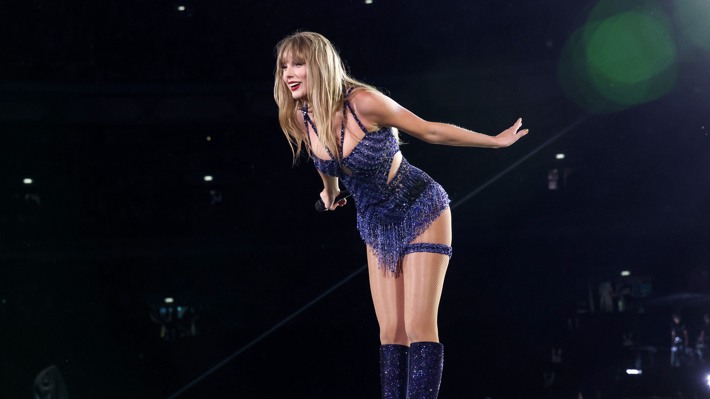

Taylor Alison Swift, nascida em 13 de dezembro de 1989 em Reading, Pensilvânia, é uma cantora, compositora e atriz. Desde pequena, mostrou talento para a música quando aprendeu a tocar violão aos 12 anos com um tecnico que estava ajudando-a arrumar seu computador.Sua primeira composição mais famosa foi lucky you, e então em 2005, Taylor assinou contrato com a antiga gravadora, Big Machine Records. Taylor lançou seu primeiro, auto-intitulado "TAYLOR SWIFT"